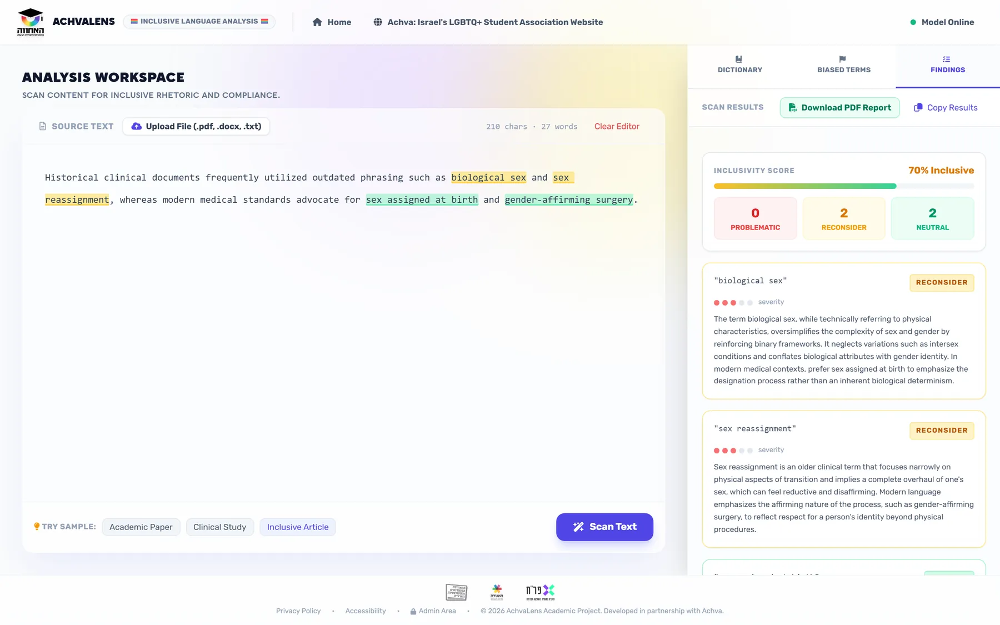

An AI scanner for Achva LGBT that marks every LGBTQ+ term in a text green, yellow or red, explains why, and hands back an audit report. Built for a real client, measured against their own guidelines.
Led the model research, set up the deployment to Azure, built document upload and the PDF and CSV reports, and wrote the accuracy benchmark.
Team
Four students, with Achva LGBT as the client
When
2026
Stack
Python, DSPy, GPT-4o on Azure OpenAI, Flask, SQLite, Docker, Azure App Service

A real scan: two outdated clinical terms marked "reconsider", with an explanation and a better alternative for each.
Who it's for
Reviewers who disagree on the hard cases
Achva LGBT reviews academic and professional texts for language that is outdated or harmful to LGBTQ+ people. By hand it's slow, and reviewers draw the line in different places, especially between "a bit outdated" and "actually harmful".
The writer
A researcher or student who wants to publish respectfully. Pastes text or uploads a PDF or Word file, and gets a traffic-light report with alternatives.
The reviewer at Achva
Wants consistent decisions and less repetitive work. Approves new terms in a dashboard, and those decisions teach the model.
Product decisions
What we chose, and what it cost
Two easy questions instead of one hard one
Chose
Stage 1: does this phrase need attention at all? Stage 2, only for flagged phrases: reconsider, or harmful?
Gave up
A single, simpler model call.
Why
That's how a human reviewer thinks, and it made each step measurable on its own. Stage 1 alone was right 81% of the time on validation.
Let an optimizer write the instructions
Chose
DSPy tries many prompt versions and keeps the ones that make fewer mistakes on 834 labeled terms from Achva's guidelines.
Gave up
Full control over the exact wording of the prompt.
Why
Hand-tuning is guesswork. Measuring against the client's own labels turns "it seems better" into a number.
Humans approve, the model learns
Chose
New phrases that appear 3+ times enter a review queue. Reviewers label them, and one click retrains the model with no downtime.
Gave up
A model that updates itself without anyone checking.
Why
Language changes, and the client is the authority on it. The product gets better from the reviewers' own decisions.
Under the hood
A two-stage classifier with a feedback loop
The scan path on top, the learning loop below.
Results
Measured, not guessed
The optimizer was steered by 162 validation terms. A separate test set of 163 terms was kept aside and run once, at the very end.
beforeafter optimization· on the 162 validation terms
64.4%accuracy on the held-out test set (163 terms, run once)
0.71F1 for spotting harmful terms, on the same test set
0.26F1 for "reconsider": the weak spot, and the next thing to fix
What I'd measure next
Fix the data before the model
What the test set says: the +6.2 points on validation shrank to 64.4% on unseen terms, and harmful terms held up well (F1 0.71). The gain mostly didn't carry over to the middle category.
The weak spot: the middle category, "reconsider". In the source list I found 249 cases where the same word root got different labels. Cleaning that up would likely help more than more tuning.
The product metric: reviewer minutes saved per document, and how often reviewers override the model's label.
How: time a sample of reviews with and without the scanner, and track overrides in the dashboard.